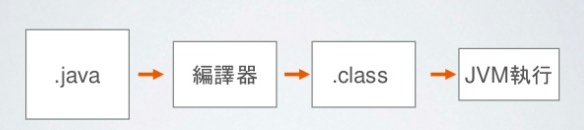

第1节：Java介绍
Java 介绍
什么是开发语言 ？
就像与不同国家的人交流需要不同的语言，跟电脑交流需要开发语言.
开发语言的高低级之分
电脑只能懂0和1的二进制，但人无法只用0和1沟通，为了让软件更像人在说话，我们发明了高级语言和编译器
为什么要java?
因为Java 可以多平台执行，易学更通用
什么是JVM？
JVM 是Java Virtual Machine 的简称，就是Java 虚拟机，它能够理解Java编译器编译过的字节码 
结论
写好Java，其它的事情就交给编译器和JVM处理